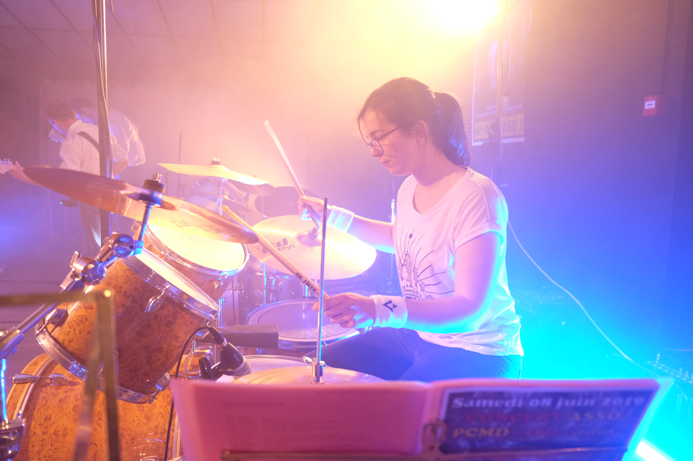

|

|
Lise Brisset
L3 Sciences du Langage
|

|
| Années | Expériences |
|---|
| 2022-2023 | L3 Sciences du langage
Université Sorbonne Nouvelle, Campus Nation |
| 2021-2022 | L2 Sciences du langage
Université Sorbonne Nouvelle, Campus Censier |
| 2020-2021 | L1 Sciences du langage
Université Sorbonne Nouvelle, Campus Censier |
|
Liste de mes cinq dernières lectures :
- L'Homme qui prenait sa femme pour un chapeau, Oliver Sacks
- Meso-America as a Linguistic Area, Campbell, Kaufman, Smith-Stark
- Le Sprachbund mésoaméricain : instanciation spatiale d’un concept opératoire, Jean Léo Léonard
- La Mésoamérique. Une aire graduelle de convergences structurelles, Claudine Chamoreau
- Contraintes préférentielles et ordre des mots en français, Thèse Juliette Thuilier
|
Cliquer ICI pour ouvrir le syllabus du cours Programmation pour les Humanités Numériques (LZML021).